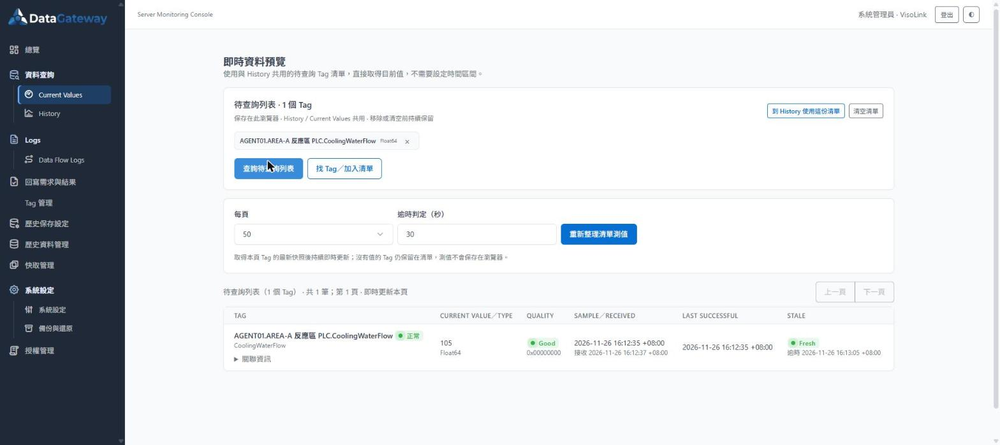
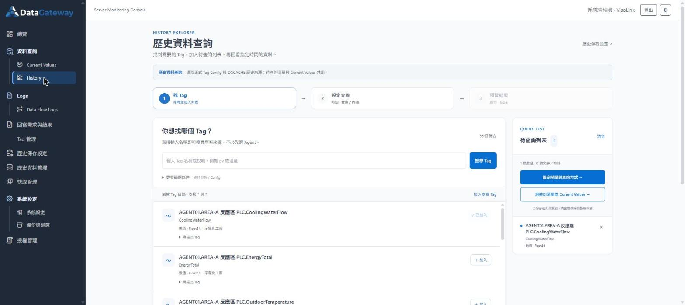

資料查詢（Current Values／History）
Current Values 看目前值，History 查指定時間的歷史資料；兩頁共用同一份「待查詢列表」，存在這台瀏覽器。
查看即時值（Current Values）

- CURRENT VALUE／TYPE
- 目前值與資料型別。
- QUALITY
- 資料品質，例如 Good。
- SAMPLE／RECEIVED
- 設備取樣時間與 DG 收到的時間。
- STALE
- Fresh 表示在逾時判定內；超過則標示逾時。
- 按「找 Tag／加入清單」，在「從 Tag Config 找 Tag」輸入名稱後按「搜尋 Tag 目錄」。
- 在要看的 Tag 按「加入待查詢」。
- 按「查詢待查詢列表」。
- 需要時調整「每頁」與「逾時判定（秒）」，再按「重新整理清單測值」。
表格列出每個 Tag 的目前值並持續即時更新；沒有值的 Tag 仍保留在清單中。
待查詢列表存在這台瀏覽器，移除或「清空清單」前會一直保留；測值本身不存在瀏覽器。
失敗時先查
- 顯示「DG 維護中，暫停查詢」：等 DG 切回運作中（第 14 章）。
- Tag 的來源狀態不是「正常」：到「Tag 管理」查看來源（第 7 章）。
歷史查詢步驟 1：找 Tag

- 在「你想找哪個 Tag？」輸入 Tag 名稱或說明，按「搜尋 Tag」；需要時展開「更多篩選條件」選資料型態或 Config。
- 也可以直接瀏覽 Tag 目錄，名稱支援 * 與 ? 萬用字元。
- 在要查的 Tag 按「＋ 加入」，或按「加入本頁 Tag」一次加入整頁。
- 右側「待查詢列表」確認後，按「設定時間與查詢方式 →」。
待查詢列表列出要查的 Tag，進入步驟 2。
失敗時先查
- 找不到 Tag：確認該 Tag 已在「Tag 管理」中出現。
歷史查詢步驟 2：設定時間與取得方式

- 在「什麼時間的資料？」按「最近 15 分鐘」「最近 1 小時」「最近 24 小時」，或自訂開始時間（含）與結束時間（不含）。
- 在「怎麼取得資料？」選「實際資料 Recorded」或「內插資料 Interpolated」（內插要再設定間隔）。
- 選「每批讀取紀錄」100、250 或 500 筆。
- 按「查詢 N 個正式 Tag →」。
進入步驟 3 顯示查詢結果。
一次查詢最多 31 天；這個畫面最多載入 10,000 筆；內插最多 10,000 個時間點。
失敗時先查
- 時間區間超過 31 天會被拒絕，請縮短區間。
歷史查詢步驟 3：看趨勢與表格

- 看上方狀態列，例如「已回傳資料 · 區間完整」。
- 在「趨勢圖」分頁看數值 Tag 的走勢；點圓點可看該筆明細。
- 切到「Table」看所有型態的紀錄；用「查看 Tag」只看單一 Tag。
- 畫面提示「尚有紀錄可載入」時，按「載入下一批」。
- 要改條件時按「調整查詢條件」。
能看到指定時間內每個 Tag 的歷史紀錄。異常或缺值處趨勢線會斷開。
歷史以 Tag 為準：Agent 離線、解除註冊或 Tag 改名、更換來源後，歷史仍查得到且不會斷成兩段。
失敗時先查
- 查無資料：確認該 Tag 有設定保存政策（第 8 章）；沒有保存政策的 Tag 只有即時值。
- 顯示部分來源無法查詢：到「歷史保存設定 › 運作總覽」檢查資料庫寫入狀況。